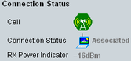

Connection Status
The "Connection Status" area displays status information for the simulated WLAN entity and the connection to the DUT.

Connection status area of the main view
The displayed information is described in the following.
Displayed for all operation modes. For background information, see "Connection Status".
For control of the states, see "Signaling and Connection Control".
Remote command:The SSID of the associated AP is displayed in "Station" mode.
Remote command:The current state of the EAP connection is displayed for the security mode "WPA / WPA2 Enterprise".
Remote command:Indicates the RX power, received at the R&S CMW. This information helps you to set the expected power, see "RF Exp. Peak Envelope Power".
The information is displayed for all operation modes.
In addition, it the R&S CMW also evaluates the quality of RX power:
- - - -: no signal from the DUT detected
- In range: DUT's power is in the expected range, according to the expected power. The highest MCS for the current WLAN mode can be decoded without IQ clipping.
- Fairly good: DUT's power is below the expected range, but decoding of a burst with the lowest MCS index is possible.
- Overdriven: the DUT's power is above the expected range, without IQ clipping occurs. The receiver cannot decode a given burst. An inappropriate external attenuation is set, or the DUT does not transmit at the correct power.
- Underdriven: decoding of a received burst is almost impossible. An inappropriate external attenuation is set, the connecting cable is defective, or the DUT does not transmit at the correct power.